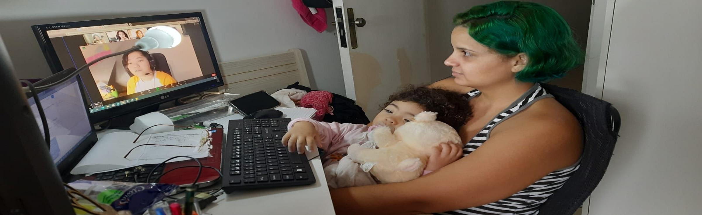

21 de Maio de 2023
Maternidade Solo

Minha jornada na maternidade solo começou de forma desafiadora, com uma gravidez em 2021 muito difícil cheia de desentendimentos com
o pai dela. Nossa relação não resistiu às diferenças e me vi enfrentando a responsabilidade de cuidar da minha filha sozinha. Durante
o primeiro ano de vida dela, assumi todas as tarefas e cuidados com muito amor e dedicação foi um período de aprendizado intenso, no
qual me vi lutando incansavelmente para proporcionar o melhor para a minha pequena.
Ela é uma criança notável, inteligente, observadora e amorosa, que me enche de orgulho a cada conquista e reafirma que todo o esforço
e dedicação valem à pena. Com ela sou capaz de superar qualquer obstáculo. Aprendi a ser uma verdadeira malabarista, equilibrando
trabalho, responsabilidades pessoais e a criação dela. Embora nem sempre seja fácil, encontro forças para seguir em frente, pois o
sorriso dela e seu amor incondicional me impulsionam a nunca desistir.
A maternidade solo é um desafio diário, mas também uma oportunidade de aprendizado e gratidão. Estamos construindo uma história de
superação e amor, fortalecendo nosso laço mãe e filha a cada dia. Juntas, formamos um time pronto para enfrentar os desafios da vida
com amor e dedicação.
21 de Maio de 2023
Transição de carreira
Diante da descoberta dessa nova vocação, decidi seguir em busca de uma transição de carreira para me tornar uma desenvolvedora.
Estou dedicando tempo para aprender programação, adquirir conhecimentos em linguagens de programação e familiarizar-me com os
conceitos e práticas da área. Estou super empolgada com a idéia de mergulhar em um campo dinâmico, onde poderei criar soluções
tecnológicas e trabalhar em projetos desafiadores.
Embora a transição de carreira possa exigir esforço e aprendizado contínuo, estou motivada a seguir essa nova direção, ciente
de que a mudança pode envolver desafios, mas estou disposta a enfrentá-los. Estou animada com as oportunidades que a área de
desenvolvimento oferece e estou pronta para me dedicar e aproveitar ao máximo!!
21 de Maio de 2023
Formação Acadêmica
Cursei Administração na UNOPAR de Janeiro/2016 à Dezembro/2019 por pressão de ter uma formação, mas confesso que nunca me interessei realmente pela área.
Apesar de não ter trabalhado na área administrativa, tive a oportunidade de realizar um estágio na área de Administração
no IFMG/Itabirito por um ano e meio onde pude vivenciar as responsabilidades e desafios inerentes à administração. Foi
uma experiência enriquecedora, aprendi sobre gestão de pessoas, resolução de problemas e desenvolvimento de estratégias
para alcançar os objetivos organizacionais.
Ao longo do curso, fui buscando encontrar minha paixão e identificar o campo que realmente me despertasse interesse.
No entanto, isso não aconteceu durante meus estudos. Após o estágio, percebi que a área de administração não despertou
meu verdadeiro interesse e paixão. Em vez disso, descobri uma nova vocação e estou buscando uma transição de carreira
para me tornar uma desenvolvedora.